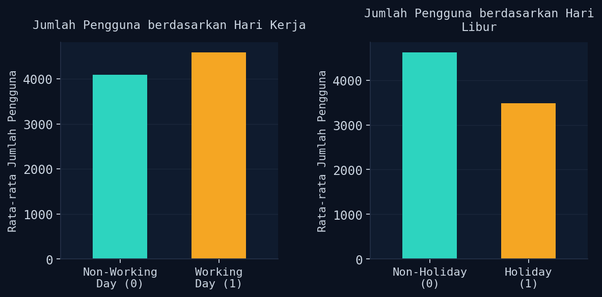
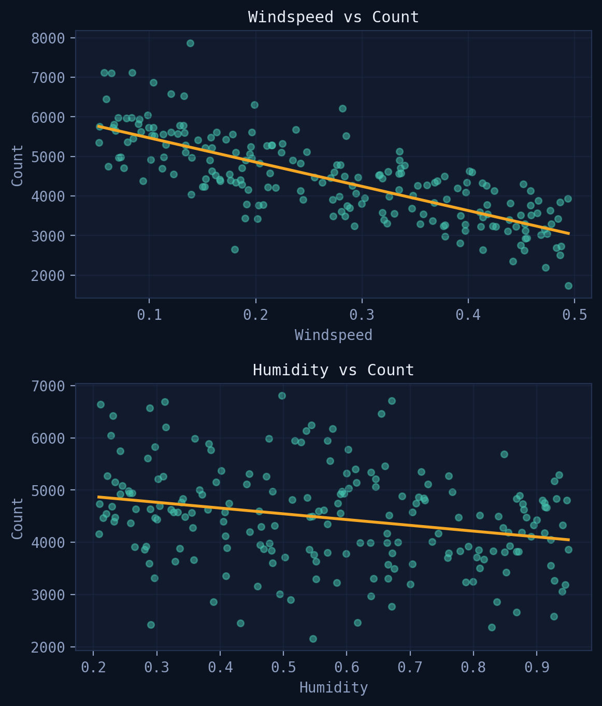
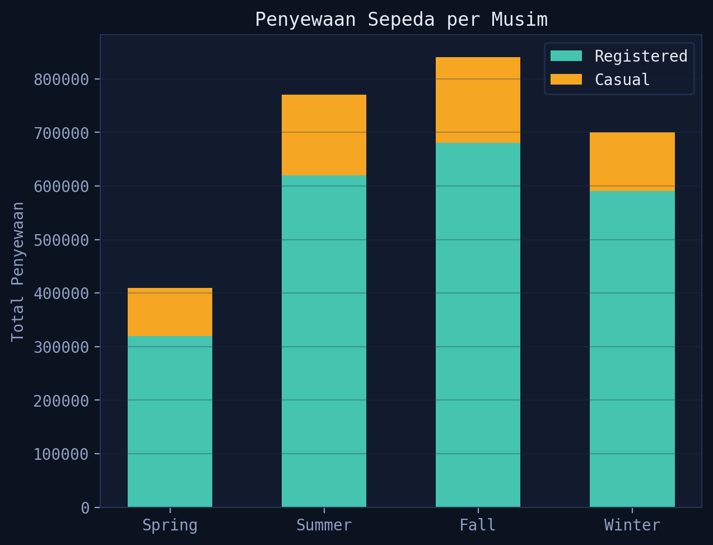

Data yang ditampilkan pada contoh di bawah bersifat fiktif untuk keperluan demonstrasi.
Menganalisis dataset publik Bike Sharing (UCI) untuk menjawab tiga pertanyaan bisnis: pengaruh hari libur, pengaruh cuaca (kelembaban & kecepatan angin), dan pengaruh musim terhadap jumlah penyewaan sepeda — dari data wrangling hingga dashboard interaktif di Streamlit.
Data Wranglingmissing value, dan data terduplikat pada dua tabel (day.csv dan hour.csv).instant, dteday, weathersit) agar analisis lebih fokus.hum → humidity, cnt → count) agar lebih mudah dibaca.
Pertanyaan 1: Pengaruh hari kerja & hari libur terhadap jumlah penyewa sepeda.
Exploratory Data Analysisgroupby) jumlah penyewa berdasarkan holiday, workingday, humidity, windspeed, dan season.
Pertanyaan 2: Hubungan kecepatan angin & kelembaban terhadap pola peminjaman. Keduanya menunjukkan korelasi negatif — makin tinggi windspeed/humidity, jumlah penyewa cenderung menurun.

Pertanyaan 3: Musim gugur (Fall) menjadi musim dengan penyewaan tertinggi, diikuti Summer, Winter, dan terakhir Spring — konsisten untuk pelanggan Casual maupun Registered.
Insight Utama